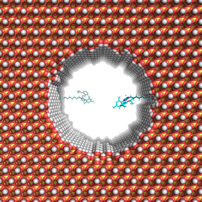

Generate a pore¶
This section describes how to create a pore.
Initialize object¶
An empty pore will be generated by simply initializing a new object with the desired properties.
[8]:
from porems.pore import Pore
pore = Pore(size=[7, 7, 7], diam=5, drill="z", res=5.5)
Add specifically placed molecules¶
Using the following function a specific placement can be done within the pore.
[9]:
from porems.essentials import Alkane
pore.special(Alkane(15), [0, 1], [0, 2], 2, "point")
[11]:
img_pymol(pore, "01")

Functionalize surface¶
The entire surface can be filled on the inside and outside using the following command.
[ ]:
from porems.essentials import TMS
# Inside
pore.attach(TMS(), [0, 1], [1, 2], 0, 4.3, inp="molar")
# Outside
pore.attach(TMS(), [0, 1], [1, 2], 1, 60, inp="percent")
[15]:
img_pymol(pore, "02")

Finalize¶
In order to finalize the pore simply run following command
[7]:
pore.finalize()
Pore is finalized. Attachement functions should not be called anymore.
Properties¶
Pore properties can be called using following command which returns a dictionary with all information. In future releases it is planned to beautify the output.
[12]:
props = pore.props()
for prop in props:
print(prop, props[prop])
Roughness 0.13074355811645236
Diameter 5.018087840616019
Surface {0: 119.73356406364567, 1: 62.668834776734734}
Volume 150.20838548534985
Dimension [7.21, 7.089, 7.595]
Allocation {'Molecule_0': 2, 'tms_0': 245, 'tms_1': 84, 'Molecule_0_mod': [0.01670375400281978, 0.02773788442846194], 'Molecule_0_rel': [0.003355704697986577, 0.0055724089969886705], 'tms_0_mod': [2.046209865345423, 3.3978908424865875], 'tms_0_rel': [0.4110738255033557, 0.6826201021311121], 'tms_1_mod': [1.3403791581455138, 2.225803982307396], 'tms_1_rel': [0.31343283582089554, 0.5204796343754493], 'OH': {'in': [2.914805073492052, 4.840260832766609], 'out': [2.9360686321282685, 4.875570627911439]}, 'SLX': [0.0, 0.0]}
Charge 2.8000055954713332e-05
System_Size [7.21, 7.089, 7.595]
Generation_Time {'Build': 0.16160321235656738, 'Matrix': 3.183939218521118, 'Prepare': 0.06267118453979492, 'Binding': 0.23377585411071777, 'Props': 0.0035190582275390625, 'Attach_Molecule_0': 0.001528024673461914, 'Attach_tms_0': 0.09519720077514648, 'Attach_tms_1': 0.03965306282043457, 'Silanol': 0.3506789207458496, 'Connect': 0.0030231475830078125, 'Delete': 0.050546884536743164, 'Objects': 0.8358960151672363, 'Excess': 0.04301786422729492, 'Sort': 0.006499052047729492, 'Position': 0.18425393104553223, 'Overlap': 1.0421929359436035}
Hydroxylation {'in': [4.977718692840295, 8.265889559681659], 'out': [4.2764477902737825, 7.101374610218835]}
Silanol_Geminal {'in': 524, 'out': 252, 'in_g': 72.0, 'out_g': 16.0}